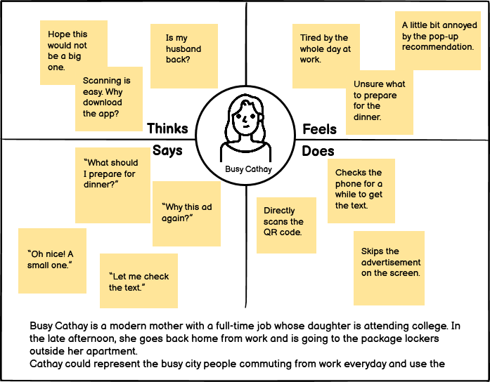

Your package is ready to be picked up
Overview
With more than 10 billion packages delivered in the U.S. annually by the top package carriers, smart package lockers have become one of the fastest-growing amenities among residentials, universities and offices. They eliminate extra labor, theft, and are completely contactless, benefiting both recipients and carriers.
This project focuses on the user experience regarding package lockers. I am going to conduct a contextual inquiry, which is to observe and interview people while they are interacting with the interface. It is a good way to step into a user’s shoes and provide hints for designers to polish their products.
Package lockers are designed for secure package delivery and convenient package pick-up. The main unit of package lockers contains a touchscreen, battery backup, electronics and compartments of varying sizes. The annotated sketches below show the key interactive component, which is the touchscreen that allows users to enter their pick-up code and enable the specific locker to open.
Package lockers are designed for secure package delivery and convenient package pick-up. The main unit of package lockers contains a touchscreen, battery backup, electronics and compartments of varying sizes. The annotated sketches below show the key interactive component, which is the touchscreen that allows users to enter their pick-up code and enable the specific locker to open.

Sketch of the interface
Observations
I observed 3 people using the interface in order to get a grasp of the user population of package lockers. Here are some of the key observations noted from the three interviewees:
Eva üìö
- Eva pressed “begin” on the touchscreen several times to go to the interface for entering code.
- Eva looked for the pick-up code from her phone for a while.
- Eva stepped backward before the locker door opened.
Stephenie üëÄ
- Stephenie directly scanned the QR code to open the locker.
- Stephenie finishes her task smoothly and opens her locker very quickly.
Mona üìè
- Mona declined when it popped up on the screen “would you like to download our mobile APP”.
- Mona read the code out and entered it.
- Mona pressed “exit” on the touchscreen after closing the locker door.
Interviews
After the observations, I interviewed three people individually to ask about their user experience regarding expectations, experience, motives and challenges. The questions are listed below:
- How often do you use package lockers(e.g. specify how many times a week on average)?
- When and where would you use the locker?
- How would you use the locker(e.g. scan or enter code)? If multiple ways, which one do you prefer?
- What alternative method would you use to pick up a package?
- Do the lockers you often use guide you which locker is gonna open?
- Did you experience when the locker is too small to fit the package size which results in the damage of the package?
- Did you experience when the locker is too high/low to reach?
- Did you experience when the large or heavy packages are left in the locker and are hard to carry back home?
- Did you experience when no locker opens when you press the open button? If so, how did you fix that?
- Did you watch the advertisement on the screen when picking your package? If so, is it mandatory to watch, or can you skip the ads? How do you feel about the advertisements?
- Overall, how easy or difficult do you find using the locker from the scale of 1 to 6 (1-extremely difficult 6-extremely easy)? And why this rating?
- How would you suggest the package locker providers improve their products?
I also summarized the responses of the interviewed users and discovered some interesting patterns.
Eva lives in dorms on campus. There are two package lockers from different providers both located a seven-minute walk from her dorm. Eva prefers package lockers compared to in-person pick-up since they are not limited by office hours and are contactless. However, she finds the lockers from one of the providers have a bad touch and do not have a camera for scanning QR code, which is the one she used in this observation. She said sometimes she struggled with this locker since the interaction is slow and insensitive. Also, Eva said she received the text message the day before, and she hoped she could be reminded for several times before she picked it up. She is also concerned about the location of the locker that is going to be opened since she is afraid of the ones directly facing her. She hopes the interface could tell her which locker she is going to open.
Stephenie loves online shopping and uses the lockers twice a week on average, which is more often than other two interviewees. She is satisfied with the lockers in her apartment building, with which she feels secure since the carriers do not have to drop the package at the door of her unit and it is convenient to carry her packages home when she is back from work. One special experience she mentioned is once her locker did not open as supposed and she fixed it by just touching “reopen” on the screen, which made her feel comfortable with the smart interface.
Mona uses package lockers in her neighborhood. She usually picks up her packages on the way home from work. She said the lockers are extremely easy to use since her elderly parents are able to use them. She likes the flexibility and privacy of the lockers, but she is a little bit bothered by the advertisements popping on the screen either recommending their mobile apps or other products. She expects the interface to be more simple and concise.
Personas
Based on overarching trends I observed amongst all three people I interviewed, I constructed two personas by creating a four-quadrant empathy map, describing what users think, feel, say and do. It helps us interpret and make sense of what the users are saying and what the observations from their actions indicate.
